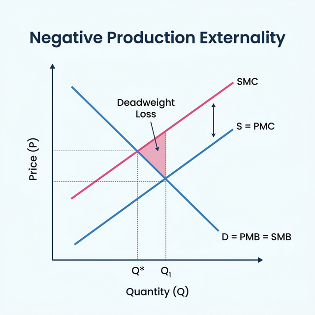
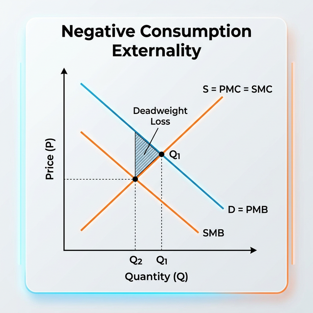
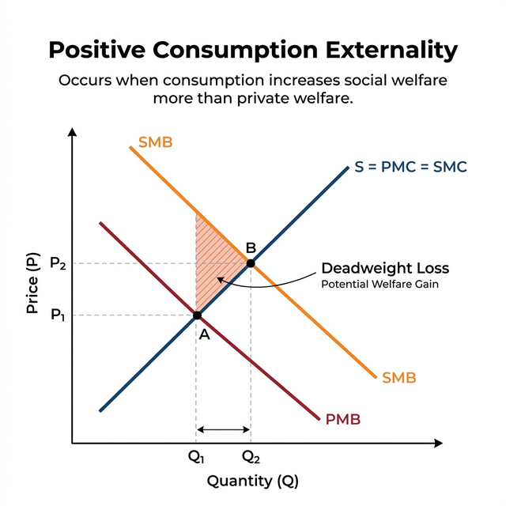
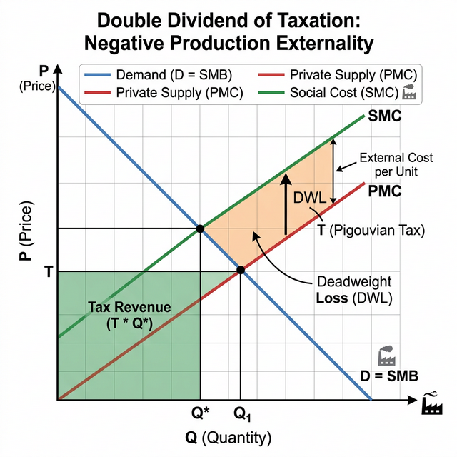

4.2 — Externalities
Chapter 4: Public Goods & Externalities
What are Externalities?
An externality is a cost or benefit that happens when someone's action has an uncompensated effect on someone else. In other words, the person doing the action doesn't pay for the harm (negative) or get paid for the benefit (positive).
Common examples:
- Negative: A factory pollutes a river, hurting people nearby.
- Positive: A bee farmer's bees pollinate nearby crops for free.
Classification of Externalities
Externalities are usually categorized by their impact and their source:
Positive vs. Negative
Does it create a benefit or a cost for others?
Production vs. Consumption
Does the effect come from making a product or using it?
Other types to know:
• Local vs. Global: Noise pollution (local) vs. Climate change (global).
• Positional: My success makes you look worse (e.g., grading on a curve).
• Network: A tool becomes more useful as more people use it (e.g., WhatsApp).
Externalities Formally
Economists Buchanan and Stubblebine (1962) defined an externality using utility functions. If person A's utility ($uA$) depends not just on their own actions ($X$), but also on person B's action ($Y1$):
An externality exists if the effect of B's action on A's utility is not zero:
• Positive: If $\partial uA / \partial Y_1 > 0$ (benefit).
• Negative: If $\partial uA / \partial Y_1 < 0$ (cost).
Private vs. Social Value
To analyze externalities, we must distinguish between what the individual pays/gets and what the society pays/gets.
| Term | Meaning |
|---|---|
| PMC | Private Marginal Cost: Direct cost to the producer. |
| SMC | Social Marginal Cost: PMC + External Cost. |
| PMB | Private Marginal Benefit: Direct benefit to the consumer. |
| SMB | Social Marginal Benefit: PMB + External Benefit. |
Graphical Analysis
1. Negative Production Externality (e.g., Pollution)

Companies only care about PMC. But society pays SMC.
Because the price is too low, the market produces Q1, which is higher than the socially optimal quantity Q*.
➡️ Result: OVERPRODUCTION and Deadweight Loss.
2. Negative Consumption Externality (e.g., Smoking)

Individuals only see their own benefit (PMB), ignoring the harm to others. The social benefit SMB is lower.
➡️ Result: OVERCONSUMPTION and Deadweight Loss.
3. Positive Consumption Externality (e.g., Vaccination)

Individuals underestimate the value (SMB > PMB) because they don't count the benefits to others (like herd immunity).
➡️ Result: UNDERCONSUMPTION. Government often needs to use subsidies or rules to reach Q2.
The Double Dividend of Taxation
Usually, taxes create "deadweight loss" because they discourage work or trade. But taxing negative externalities is different.

A Pigouvian Tax (like a carbon tax) provides two benefits at once:
- 1. Efficiency Gain: It fixes the market failure by moving production from Q1 to the social optimum Q*. It eliminates the deadweight loss.
- 2. Revenue Gain: It generates tax revenue (the green area) that can be used to fund other good things (like education) or reduce other distorting taxes.
Externalities Summary:
- Negative effects lead to overproduction/overconsumption.
- Positive effects lead to underproduction/underconsumption.
- Internalizing means making the agent pay for the external cost.
- Pigouvian taxes fix the market AND generate useful revenue (double dividend).